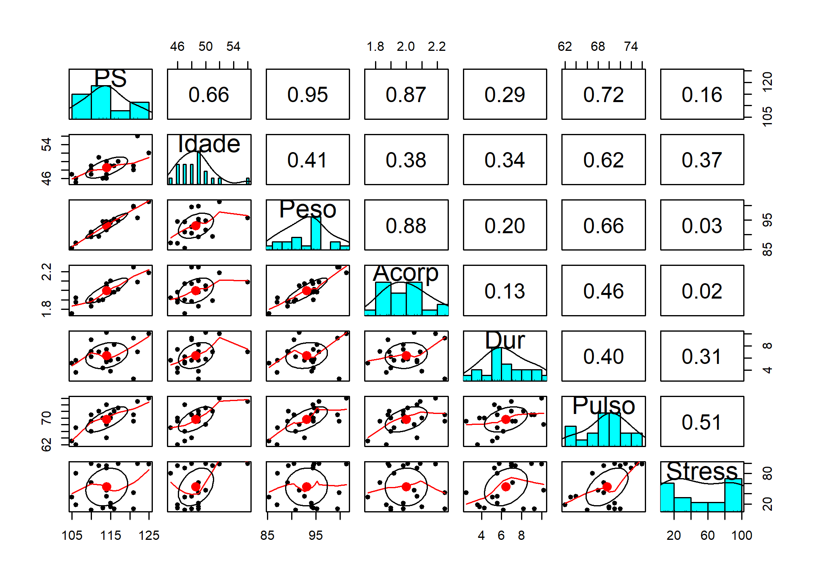
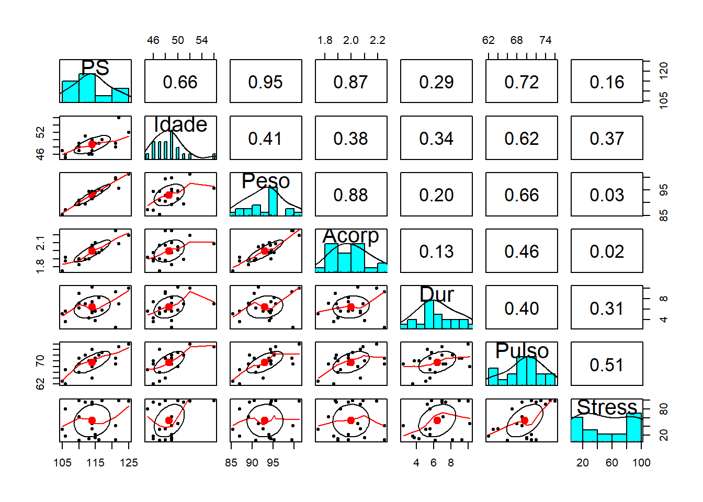

library(tidyverse)
library(readxl)
library(caret)Problemas na Regressão Multipla
Carregando bibliotecas
Dados de pressão sanguinea
BP = blood pressure (in mm Hg)
Age = age (in years)
Weight = weight (in kg)
BSA = body surface area (in sq m)
Dur = duration of hypertension (in years)
Pulse = basal pulse (in beats per minute)
Stress = stress index
pressao_sangue <- read_delim("bloodpress.txt", col_names = TRUE)Renomeando
pressao_sangue <- pressao_sangue %>% rename(PS = BP, Idade = Age,
Peso = Weight, Acorp = BSA,
Pulso = Pulse)Sumario
summary(pressao_sangue) Pt PS Idade Peso
Min. : 1.00 Min. :105.0 Min. :45.00 Min. : 85.40
1st Qu.: 5.75 1st Qu.:110.0 1st Qu.:47.00 1st Qu.: 90.22
Median :10.50 Median :114.0 Median :48.50 Median : 94.15
Mean :10.50 Mean :114.0 Mean :48.60 Mean : 93.09
3rd Qu.:15.25 3rd Qu.:116.2 3rd Qu.:49.25 3rd Qu.: 94.85
Max. :20.00 Max. :125.0 Max. :56.00 Max. :101.30
Acorp Dur Pulso Stress
Min. :1.750 Min. : 2.50 Min. :62.00 Min. : 8.00
1st Qu.:1.897 1st Qu.: 5.25 1st Qu.:67.75 1st Qu.:17.00
Median :1.980 Median : 6.00 Median :70.00 Median :44.50
Mean :1.998 Mean : 6.43 Mean :69.60 Mean :53.35
3rd Qu.:2.075 3rd Qu.: 7.60 3rd Qu.:72.00 3rd Qu.:95.00
Max. :2.250 Max. :10.20 Max. :76.00 Max. :99.00 cor(pressao_sangue[,-1]) PS Idade Peso Acorp Dur Pulso Stress
PS 1.0000000 0.6590930 0.95006765 0.86587887 0.2928336 0.7214132 0.16390139
Idade 0.6590930 1.0000000 0.40734926 0.37845460 0.3437921 0.6187643 0.36822369
Peso 0.9500677 0.4073493 1.00000000 0.87530481 0.2006496 0.6593399 0.03435475
Acorp 0.8658789 0.3784546 0.87530481 1.00000000 0.1305400 0.4648188 0.01844634
Dur 0.2928336 0.3437921 0.20064959 0.13054001 1.0000000 0.4015144 0.31163982
Pulso 0.7214132 0.6187643 0.65933987 0.46481881 0.4015144 1.0000000 0.50631008
Stress 0.1639014 0.3682237 0.03435475 0.01844634 0.3116398 0.5063101 1.00000000Aqui vemos que a presssão sanguinea tem uma correlação forte com o peso e também com a área corporal. O peso e a area corporal tem uma correlação forte. Esta correlação alta pode indicar a existencia de multicolinearidade.
library(psych)
pairs.panels(pressao_sangue[,-1])
dados <- pressao_sangue[,-1]
mod1 <- lm(PS ~ ., data=dados)
summary(mod1)
Call:
lm(formula = PS ~ ., data = dados)
Residuals:
Min 1Q Median 3Q Max
-0.93213 -0.11314 0.03064 0.21834 0.48454
Coefficients:
Estimate Std. Error t value Pr(>|t|)
(Intercept) -12.870476 2.556650 -5.034 0.000229 ***
Idade 0.703259 0.049606 14.177 2.76e-09 ***
Peso 0.969920 0.063108 15.369 1.02e-09 ***
Acorp 3.776491 1.580151 2.390 0.032694 *
Dur 0.068383 0.048441 1.412 0.181534
Pulso -0.084485 0.051609 -1.637 0.125594
Stress 0.005572 0.003412 1.633 0.126491
---
Signif. codes: 0 '***' 0.001 '**' 0.01 '*' 0.05 '.' 0.1 ' ' 1
Residual standard error: 0.4072 on 13 degrees of freedom
Multiple R-squared: 0.9962, Adjusted R-squared: 0.9944
F-statistic: 560.6 on 6 and 13 DF, p-value: 6.395e-15library(car)
vif(mod1) Idade Peso Acorp Dur Pulso Stress
1.762807 8.417035 5.328751 1.237309 4.413575 1.834845 mod2 <- update(mod1,. ~ . -Acorp)
summary(mod2)
Call:
lm(formula = PS ~ Idade + Peso + Dur + Pulso + Stress, data = dados)
Residuals:
Min 1Q Median 3Q Max
-1.02600 -0.18526 -0.00077 0.21934 0.72533
Coefficients:
Estimate Std. Error t value Pr(>|t|)
(Intercept) -15.116781 2.748758 -5.499 7.83e-05 ***
Idade 0.731940 0.055646 13.154 2.85e-09 ***
Peso 1.098958 0.037773 29.093 6.37e-14 ***
Dur 0.064105 0.055965 1.145 0.2712
Pulso -0.137444 0.053885 -2.551 0.0231 *
Stress 0.007429 0.003841 1.934 0.0736 .
---
Signif. codes: 0 '***' 0.001 '**' 0.01 '*' 0.05 '.' 0.1 ' ' 1
Residual standard error: 0.4708 on 14 degrees of freedom
Multiple R-squared: 0.9945, Adjusted R-squared: 0.9925
F-statistic: 502.5 on 5 and 14 DF, p-value: 2.835e-15vif(mod2) Idade Peso Dur Pulso Stress
1.659637 2.256150 1.235620 3.599913 1.739641 mod3 <- lm(PS ~ Idade + Peso + Pulso + Stress, data = dados)
summary(mod3)
Call:
lm(formula = PS ~ Idade + Peso + Pulso + Stress, data = dados)
Residuals:
Min 1Q Median 3Q Max
-0.89479 -0.15857 -0.04157 0.25593 0.92857
Coefficients:
Estimate Std. Error t value Pr(>|t|)
(Intercept) -15.683749 2.731808 -5.741 3.90e-05 ***
Idade 0.739878 0.055784 13.263 1.09e-09 ***
Peso 1.097262 0.038135 28.773 1.54e-14 ***
Pulso -0.126973 0.053654 -2.367 0.0318 *
Stress 0.007851 0.003863 2.032 0.0602 .
---
Signif. codes: 0 '***' 0.001 '**' 0.01 '*' 0.05 '.' 0.1 ' ' 1
Residual standard error: 0.4757 on 15 degrees of freedom
Multiple R-squared: 0.9939, Adjusted R-squared: 0.9923
F-statistic: 615 on 4 and 15 DF, p-value: < 2.2e-16residualPlots(mod3)
Test stat Pr(>|Test stat|)
Idade 0.3403 0.7387
Peso 0.3825 0.7078
Pulso 0.0914 0.9285
Stress -0.5581 0.5856
Tukey test 0.2340 0.8150Teste dos resíduos
Teste de normalidade Teste de heterocedasticidade (Bresch-Pagan) Teste de autocorrelação (Durbin-Watson)
library(lmtest)
mod3_sum <- summary(mod3)
shapiro.test(mod3_sum$residuals)
Shapiro-Wilk normality test
data: mod3_sum$residuals
W = 0.95962, p-value = 0.5364bptest(mod3)
studentized Breusch-Pagan test
data: mod3
BP = 1.9471, df = 4, p-value = 0.7455dwtest(mod3)
Durbin-Watson test
data: mod3
DW = 1.6389, p-value = 0.2115
alternative hypothesis: true autocorrelation is greater than 0